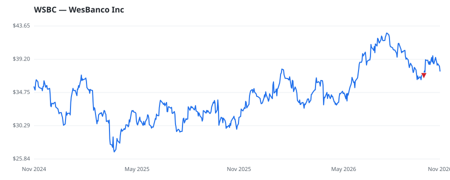

bullish · bearish · n/a — dots: price>SMA10 · SMA10>SMA50 · SMA50>SMA200 · up>down volume (20d)
Banks · mid cap

Wesbanco Inc is a bank holding company. Through its subsidiaries, it offers a full range of financial services, including retail banking, corporate banking, personal and corporate trust services, brokerage services, mortgage banking, and insurance. WesBanco operates one commercial bank, WesBanco Bank, which runs scores of branches. The company's reportable segments are Community Banking, which derives key revenue, and Trust and Investment Services. The Community Banking segment offers various banking products and services through various delivery channels, including commercial demand, individu NATIONAL COMMERCIAL BANKS · website
| Revenue | $1.3B | Net income | $223.1M |
|---|---|---|---|
| Operating income | — | Diluted EPS | $2.23 |
| Assets | $27.7B | Equity | $4.0B |